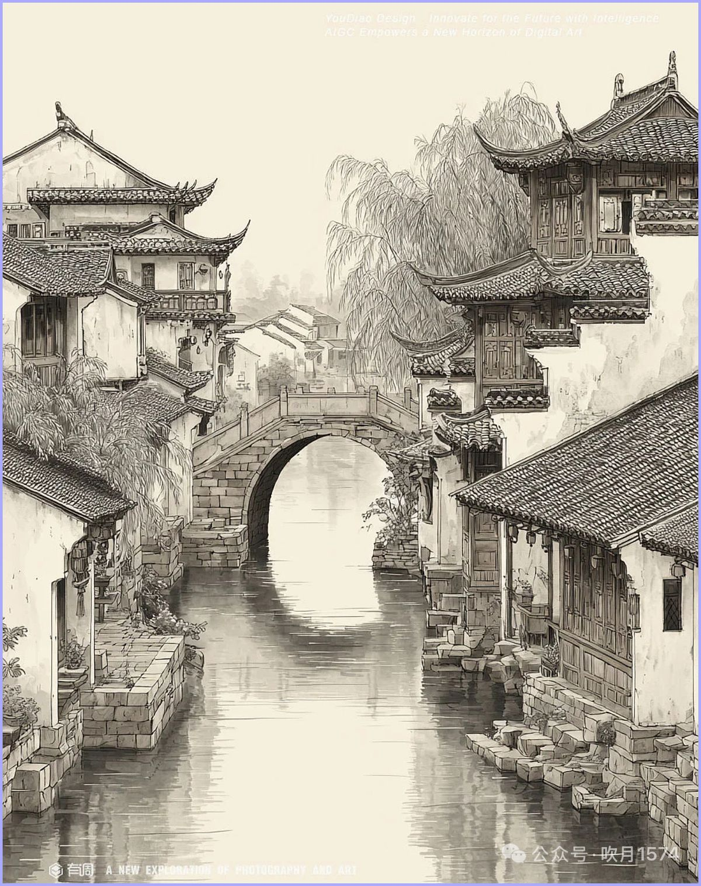
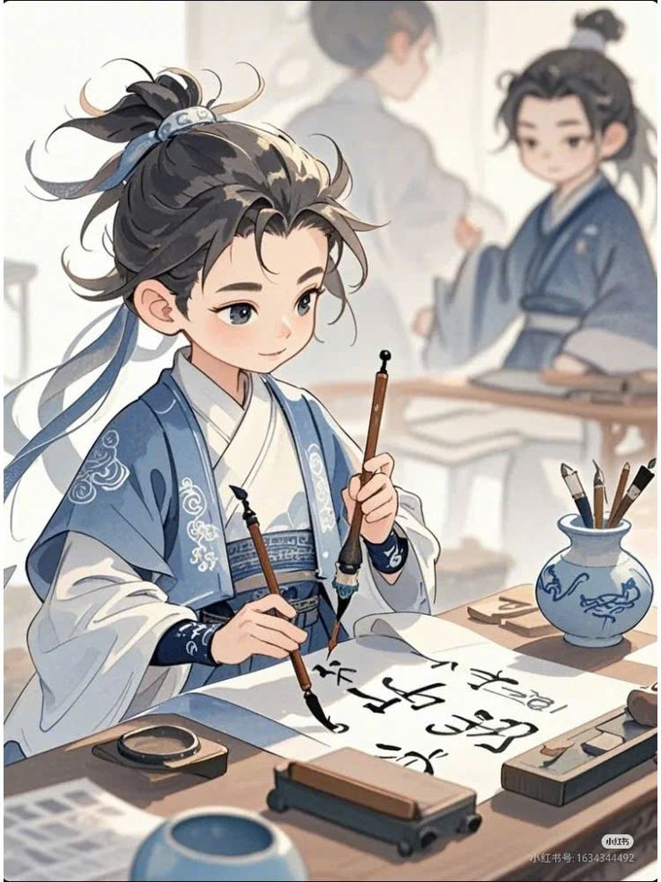
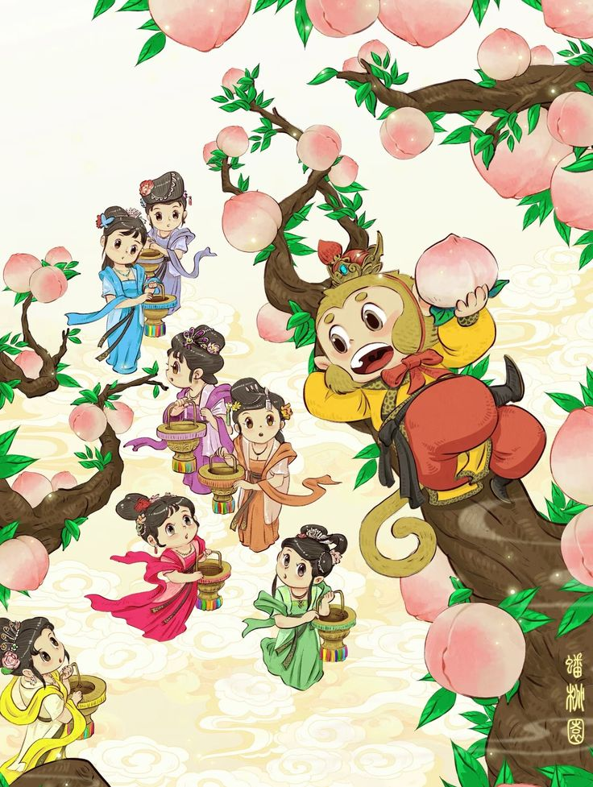
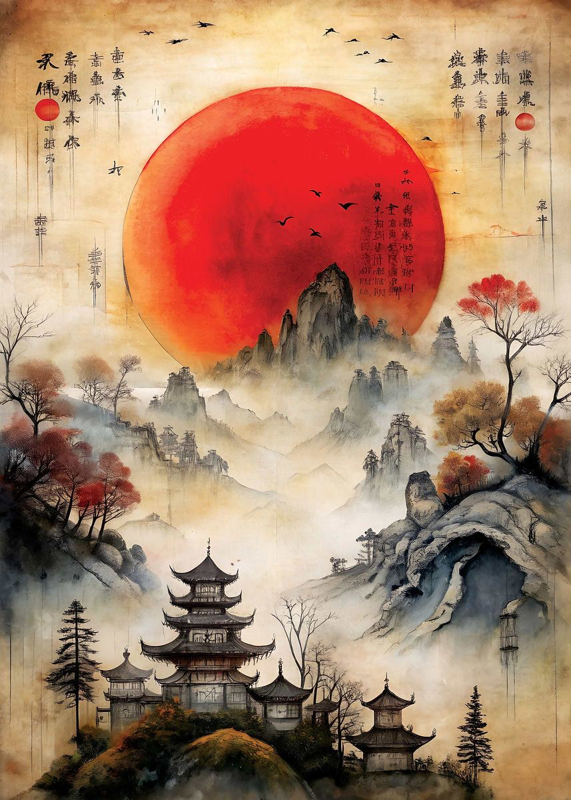

Explore Courses
艺术课程体系
Foundations in Chinese ink, academic sketch, oil, and children intellectual art.
Grade Exam
全国考级认证
Grades 1 to 9 standardized assessment supervised across accredited test centres.
Nanyang Star
南洋之星国际大赛
Premier international youth art competitions, gala exhibitions, and global awards.
News & Events
展赛与大师讲座
Masterclass workshops, calligraphy rubbings, and gallery tour dates.
Visual Arts Disciplines & Pathways
Structured artistic progression from sensory childhood discovery to academic mastery.

Fine Arts
纯美术与学院素描Academic pencil sketching, plaster bust anatomical studies, watercolor washes, and Western oil compositions.

Heritage Arts
中国画与传统书法Soft/hard pen calligraphy, Yan & Liu regular script, Shanshui landscapes, and Lingnan flower-and-bird painting.

Youth Arts
少儿智力美术与卡通Sensory intellectual art, imaginative cartoon illustration, color theory, and patented 3D plastic origami sculpture.
Certification
全国考级与师资认证Progressive Grades 1 to 9 standardized assessment, verified certification credentials, and educator diplomas.
Featured Art Studio Courses
Carefully structured studio curriculums taught by acclaimed master instructors.
Explore the Nine-Level Journey
探索一至九阶艺术成长之路
A structured, progressive pathway in visual arts assessment and classical calligraphic mastery from foundational strokes to mature artistic expression. Click any grade to view its official syllabus and authentic reference plates.
Fundamental Brushwork
硬笔与软笔执笔姿势及基本笔画Correct pen/brush grip, posture ergonomics, and 8 foundational strokes (horizontal, vertical, pie, na, dot). Centered balance within 16K grid paper.
Inspect Grade 1 StandardsBalance & Proportion
九宫结构与复合折钩笔画Compound stroke combinations (pie-dian, shu-ti, heng-zhe-gou) and spatial equilibrium within standard Nine-Palace grid frames.
Inspect Grade 2 StandardsRegular Script Discipline
标准楷书临摹与四字成语临写Rigorous Standard Regular Script imitation with classical four-character idioms, disciplined column alignment, and even character spacing.
Inspect Grade 3 StandardsClassical Tang Poetry
唐诗五言绝句创作与题款Complete Tang quatrain composition (20 characters) with harmonious side inscription, year/name signatures, and disciplined 8K paper layout.
Inspect Grade 4 StandardsWei Stele & Master Models
魏碑方笔气象与颜柳经典名帖Northern Wei monument stele vigor or Yan Zhenqing/Liu Gongquan standard copybook rigor on 8K layout. Master chisel-like square bone structure.
Inspect Grade 5 StandardsScript Versatility
隶书蚕头燕尾与行书过渡研习Clerical Script (隶书) silkworm-head and swallow-tail dynamics or Running Script (行书) transitions with formal year and artist seals.
Inspect Grade 6 StandardsRunning Script Tempo
行书气韵连贯与提按节奏掌控Semi-cursive running script (行书) poem scrolls with continuous stroke energy, spontaneous dry-brush transitions, and rhythmic musical tempo.
Inspect Grade 7 StandardsDual Script Couplets
楹联书法创作与长篇自撰题跋Choice of Seal, Clerical, or Running cursive couplet scrolls with long self-composed inscriptions, historical commentary, and balanced spacing.
Inspect Grade 8 StandardsApex Graduation Scroll
毕业九段·多体通篇创作与金石钤印Master classical scroll creation in dual distinct scripts, complete with scholarly seal carving appraisal, colophons, and expert critique.
Inspect Apex Grade 9 StandardsSingapore National Visual Arts Grade Examination
Administered across accredited testing centres in Singapore. Features 18 complete Chinese calligraphy levels, authentic master reference plates, and interactive level comparison.
Digital Art Museum & Exhibition Vault
Masterpieces across Singapore Nanyang, Singapore KEC, and China Divisions.
Harmony of Nanyang Gardens (南洋花园交响)
Chloe Lim (林欣怡) · Star of Nanyang Grand Trophy (特等奖)
KEC Youth Creative Journey (少儿创意启航)
Megan Low (刘美嘉) · Star of Nanyang Grand Trophy (特等奖)
Rivers & Mountains in Splendor (千里江山万里云)
Zhang Haoran (张浩然) · Star of Nanyang Grand Trophy (特等奖)
Selected Milestones & Pioneer Heritage
Founded with the advocacy and calligraphy inscription of pioneer master Liu Kang.
Establishment & Pioneer Inscription
Pioneer artist Liu Kang encourages society formation and inscribes "南洋美术家協會" with his artist seal.
15th Anniversary Milestone
Expansion of children's fine art education and establishment of standardized exam criteria.
First International Rubbing & Calligraphy Exhibition
Lee Kong Chian Gallery, Singapore Calligraphy Centre; attended by MP Wang Dingkun and Embassy Counselor Que Xiaohua.
Dreaming Lion City International Youth Art & Calligraphy
Finals at Canopy (Jurong East) and gala awards ceremony at The Old Parliament House (The Arts House).
Nanyang Star International Competition ("Looking into the Future")
Over 100 international youth artworks cataloged in digital archives celebrating creative resilience.
Upcoming Events & Society News
Stay informed about registration dates, masterclasses, and exhibition open calls.

National Grade Exam Winter Intake
Standardized evaluation across 6 disciplines under certified examiner criteria with official dual-seal credentials.

Chinese Ink Brushwork & Shanshui Landscape
Led by Society President Dr. Teng Jiashu. Exploring classical Song-Yuan brushwork principles and contemporary Southeast Asian Nanyang landscape expression.

5th Nanyang Star International Competition & Gala
Annual landmark youth competition uniting over 100 art institutions across Southeast Asia. Open call submissions now accepted.
Start Your Creative Journey
开启您的艺术探索与考级进阶之路
Whether beginning your first stroke in Chinese calligraphy, preparing for academic grade examinations, or submitting masterworks to international competitions, our secretariat and faculty are here to guide you.